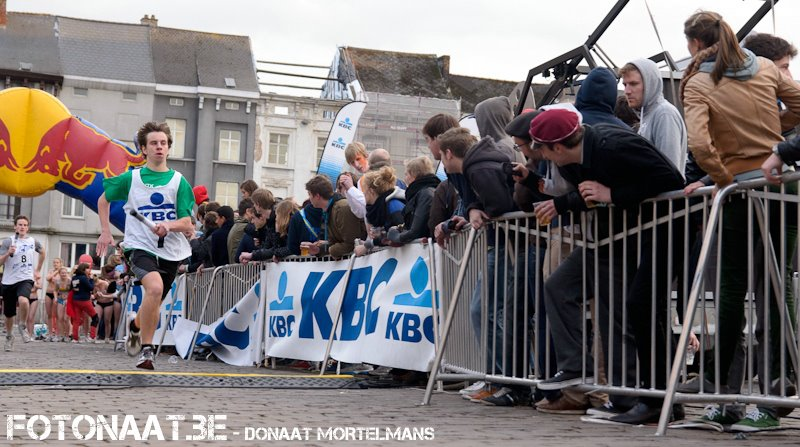
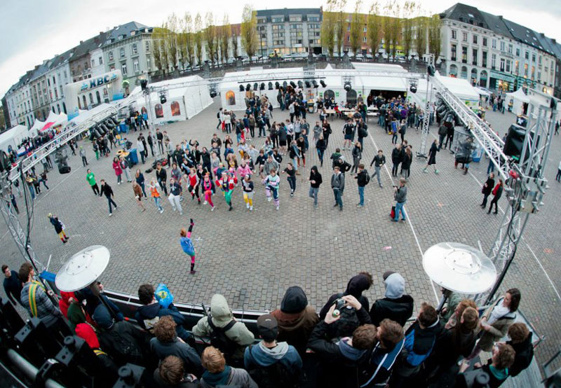
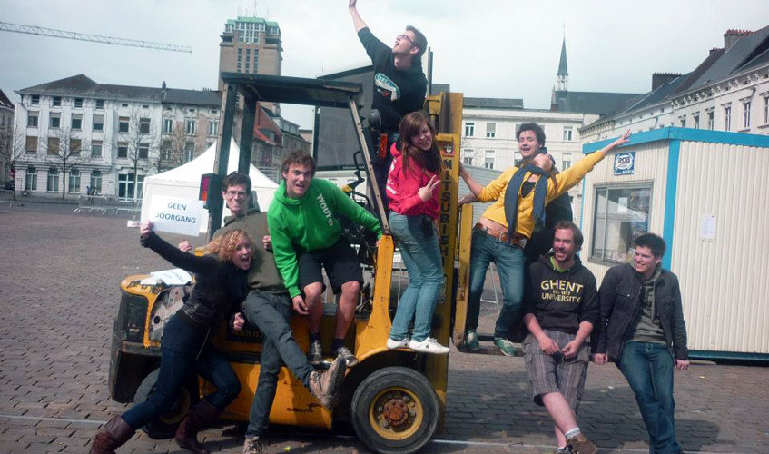

Eindscore 2013:
| 1. VTK | 2. HILOK | 3. VLK |
| 860 rondjes | 848 rondjes | 777 rondjes |
| 4. VEK | 5. Wetenschappen & VLAK | 6. VRG |
| 713 rondjes | 700 rondjes | 682 rondjes |
| 7. Blandinia | 8. KVHV | 9. HK |
| 659 rondjes | 653 rondjes | 639 rondjes |
| 10. Politeia | 11. GFK/VGK/VBK/Dentalia | 12. VPPK |
| 632 rondjes | 617 rondjes | 577 rondjes |
| 13. Kofschipclubs | 14. SK | 15. Curatio |
| 525 rondjes | 519 rondjes | 231 rondjes |
De 12urenloop is een sportieve en studentikoze activiteit voor alle Gentse studenten!
In de eerste plaats is het een loopwedstrijd, waar door aflossing in 12 uur zoveel mogelijk rondjes van ongeveer 400m worden gelopen. Het hele gebeuren vindt plaats in een ontspannen sfeertje dat eigen is aan het studentenleven.
Daarnaast valt er op het Sint-Pietersplein ook heel wat anders te beleven. Deelnemende kringen en sponsors zorgen voor randanimatie, in de fakbars kan je genieten van een pintje en ondertussen kan je luisteren naar de DJ-contest.
Om 22u stoppen we met lopen en dan maken we er een fantastisch feestje in openlucht van.
- 
- 


- 


 Hoveniersberg 24, 9000 Gent
Hoveniersberg 24, 9000 Gent

{kind=link}
{kind=link}
{kind=link}
{kind=link}
{kind=link}
{kind=link}
{kind=link}
{kind=link}